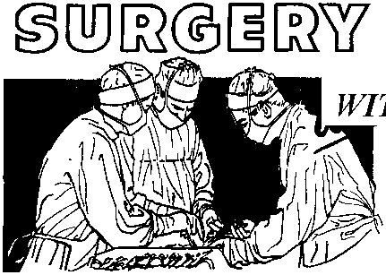

JULY 22, 1965
THE REASON FOR THIS MAGAZINE
News sources that are able to keep you awake to the vital issues of our times must be unfettered by censorship and selfish interests. "AwakeI” has no fetters. It recognizes facts, faces facts, is free to publish facts. It is not bound by political ties; it is unhampered by traditional creeds. This magazine keeps itself free, that it may speak freely to you. But it does not abuse its freedom. It maintains integrity to truth.
The viewpoint of "Awakel" is not narrow, but is international. "Awake!" has its own correspondents in scores of nations. Its articles are read in many lands, in many languages, by millions of persons.
In every issuej "Awake!" presents vital topics on which you should be Informed. It features penetrating articles on social conditions and offers sound counsel for meeting the problems of everyday life. Current news from every continent passes in quick review. Attention Is focused on activities in the fields of government and commerce about which you should know. Straightforward discussions of religious issues alert you to matters of vital concern. Customs and people in many lands, the marvels of creation, practical sciences and points of human interest are all embraced in Its coverage. "Awake!" provides wholesome, instructive reading for every member of the family.
"Awake!" pledges itself to righteous principles, to exposing hidden foes and subtle dangers, to championing freedom for all, to comforting mourners and strengthening those disheartened by the failures of a delinquent world, reflecting sure hope for the establishment of God's righteous new order rn this generation.
Get acquainted with "Awake!" Keep awake by reading "Awake!"
Published Simultaneously in the United States by the WATCHTOWER. BIBLE AND TRACT SOCIETY OF NEW YORK. INC. 117 Adams Street ' Brooklyn, N.Y. 11201. U.S.A.
and in England by
WATCH TOWER BIBLE AND TRACT SOCIETY
Watch Tower House, The Ridgeway London N.W. 7, England
N. H. Knorr. President Grant Suiter, Secretary
Printing this issue: 4,250,000
4<IC<W (Australia, 5d: Soith Africa, 3‘/a c>
Yearly subscription rates
Office for semimonthly editions
A11 erica. U.S., 117 Atlants Street, Brooklyn, N.Y, 11201 AM*trallaT 11 Berfatorri Nd., BtrathfleJfl. N.S.W.
Canada, 1T50 Bridgeland Ato., Toronto 19, Ont
Enn land, Watch Tower House,
Now Zealand, £21 Men NnrUt Eid., Auckland S.W. 1
South Africa, Private , P.O, BlarulsfoTiteln, Tri. 70c
(Monthly editions cost half the above rates.) RimFttantts for subscrjpilQus should be sent to the office in your country. OtheruJse send your remittance to Brooklyn. Notice of expiration Is sent at least two Issues before subscription expires.
Now published in 26 languages
Semimonthly—Afrikaans, CeEra-Vfsayan, Danish, Dutch, English, Finnish, French, German, Greek, iloeano, Italian, Japanese, Korean, Norwegian, Portuguese^ Spanish. Swedish, Tagalog, Zulu.
Monthly—Chinese, dnyanja, HlHgaynon-Visayau, Malayalam, Polish, Tamil, Ukrainian.
CHANGES OF ADDRESS should reach It thirty dayi before year moving date. Give i» yoir old and new addrm (If possible, your old tddrea label). Write Watch Tower, Watch Tower Hwer The Ridgeway, London M-W- 7, England.
Entered a& second-elaae mattes' at Brooklyn, N.Y. Printed In England
The Bible translation regvFarly md In "Awakel" Fa the New Werlfl TranafatFon of the Holy Scripture, 1961 edition. When other translation* art tied, thia la dearly marked,
|
Read Carefully Before You Sign |
3 |
Special Dispensation |
24 |
|
Do You Have Time for God? |
5 |
What Is Thunder? |
25 |
|
Surgery Without Blood Transfusions |
8 |
Popular Position |
26 |
|
A Visit with the Pygmies |
13 |
“Your Word Is Truth” | |
|
Vietnam—a Dangerous Powder Keg |
17 |
“Burning the Devil” | |
|
“A Glass of Milk, Please” |
21 |
Watching the World |
IT HAS happened to many
persons, and it could happen to you too. A salesman may call at your door and offer to demonstrate a vacuum cleaner or some other appliance, assuring you that there will be no obligation to buy. When finishing and about to leave, he may say something to this effect: “By the way, would you please sign here. It is just for the record, so that I can let the boss know how many demonstrations I have conducted.” Many persons have quickly scribbled their name—sometimes just to get rid of the man. Would you do so?
Some of those doing so have later discovered their signature to be very costly. The dishonest salesman simply has to fill in the terms of a contract in which the signer agrees to buy the appliance for a given amount—which, of course, is an exorbitant price that the salesman inserts. It is next to impossible to prove that the contract was filled out after the signature was affixed to it So the signer may be required to pay. If he refuses, his salary can be garnisheed, so that the amount due is taken from his wages.
When a person appreciates the importance of his signature—to what it can legally obligate him—he becomes very cautious about signing anything. He reads carefully before he signs; and more than that, he keeps a copy of all signed documents in his own personal file. Exercising this precaution can save one many hundreds of dollars.
A brochure from a Better Business Bureau tells about one of its employees who has a desk full of cheap watches, none of which work. They come from persons who have had their wages garnisheed for refusing to pay for them. The trouble that each of these persons experienced resulted from failing to take notice of what they were signing.
The salesmen from whom these people obtained their watches usually did business in a parking lot, at a bus stop or in a bar. “Wear it home," they would invite. “No charge. Just give me a buck or so, and bring the watch back tomorrow if you don’t like it." Then came the “receipt,” as the salesman called it: “Just sign here.” It even happened that one man who signed for a friend who was busy starting the car ended up having his own wages attached! According to a Better Business Bureau, one of the most common complaints is from customers who thought they had
JULY 22, 1955
signed a “receipt” or something of the sort, but in reality had been tricked into signing a blank contract.
ARTICLES IN THE NEXT ISSUE
* Appreciating God's Inspired Word.
9 New Faces for an Old Bean.
♦ Religious Freedom Upheld in Medical Treatment,
• Indoctrination and You.
* Good Reasons for Keeping Clean.
Many other persons experience a financial tragedy because of failing to read carefully the fine print. Only afterward do they discover that they have signed up to pay exorbitant interest rates, or that what the salesman promised is really not provided for in the contract. For example, one family was induced to sign an inflated $1600 contract for house repairs, with the promise that they would receive a $100 check for every person in that area who, after seeing their home, placed an order for similar improvements. Later, however, the company salesman denied any knowledge of such a promise, and the family was stuck with paying the entire price.
One should remember that it is what is on the paper that one signs that counts; not what a salesman promises, or what he says is there. Beware of anyone who explains, “That’s only there for special conditions,” or “Paymo attention to that because we never enforce it,” or “This clause doesn’t apply to you.” Do not accept such explanations. Have the contract changed before you sign it, and keep a copy of it.
Another thing to watch for are blank spaces in a contract, or illegible writing or figures that can be doctored up later. It is a common practice of some, after you sign, to fill in these blank spaces with terms that alter the contract altogether. The numbers can easily be .changed. One woman customer complained that her contract was for $360, but it came through as $560. Here is an example of where having a carbon copy in legible form can save you from being cheated out of hundreds of dollars.
When entering a hospital, a person is often required to sign certain forms. Here, too, one needs to be careful as to what is signed. One patient in a New York hospital was asked to sign some papers for the hospital records. She refused because the papers contained no provision for her objection, on religious grounds, to taking blood transfusions. (Lev. 17:14; Acts 15:29)
However, the woman was persuaded to sign when she was assured that other papers covering this matter would be brought around later. But the promised pa
pers were never brought, and, because she had signed, the hospital had written permission to administer whatever treatment they deemed necessary.
In another instance, a form was brought around for an elderly patient to sign. It grafted the hospital permission to per-forrfi any operation required, but since it did not contain a *no-blood-transfusion’ clause, she refused to sign. At that she was shown another form, and told this was the one she wanted. After signing, it was discovered that she had signed a form identical to the previous one. By this deception the hospital obtained legal authority to administer a blood transfusion!
This emphasizes how careful one must be. Never forget that your signature holds you legally responsible to fulfill or submit to all the provisions of the contract you sign. So in order to avoid being cheated, or forced to submit to what is in violation of your principles, do not sign anything unless you clearly understand what it obligates you to do. Do not let anyone hurry you into signing. Take your time and read carefully—even the fine print. And always remember to get and keep a copy. This may save you much trouble and a great deal of heartache.

TIME for

GAD
at-
MANY men, even when not at their secular work, are so busy taking care of a garden, polishing the car, playing golf or reading the newspaper, that they fail to take time for God. Women, too, are frequently so busy taking care* of their family, engaging in community activities or tending social affairs that they feel they have no time to spare for personal reading of God’s Word and for discussing its teachings with ministers who may call at their home from time to time.
On the other hand, there are those who do attend church. But frequently the interest of even these persons extends no farther than fhe time they spend in church on Sunday morning. They find time for television, movies, plays, boating and other forms of recreation, including the reading of some of the best-selling books, but when it comes to personal reading of God’s Word and considering how to put its principles to work in their life, they have no time. If they have a Bible, it usually is not read because there are always other things that seem to be more important. They are “too busy.”
Responsibility for a Certain amount of this apathy rests upon Christendom’s churches, for they have substituted illogical traditions and dogmas, empty ceremonies, money-raising socials and interestdeadening sermons for the vibrant truths of God’s Word. They thus help to- blind people to the great treasures of wisdom in God’s Word, causing them to become indifferent toward God.
Commenting on the boredom that is so evident among many church attenders, Canadian clergyman J, M. Schroeder said: “Boredom comes when a man must try to hear with relish, — what for want of relish, he" hardly hears at all. By this — definition there is certainly much
boredom in religion these days. The businessman on a Sunday morning whose mind is on golf can scarcely ‘disguise his lack of interest in the sermon he is compelled to hear.” Not having become well acquainted with the Bible, the disinterested churchgoer mistakenly associates what it contains with the bone-dry sermons he hears in church.
For their members, Christendom’s churches have much to keep them busy, but imparting an accurate understanding, an appreciation and a trust in God’s Word is not part of their program. Note what was reported in the Scottish Daily Express of May 14, 1963: “Church members were told in Edinburgh yesterday that their congregations are ‘cluttered up’ with social circles, drama clubs, men’s dubs and women’s guilds. *We’re all very busy—but are we very busy with the right things?’ demanded Glasgow accountant Mr. George R. Green in his inaugural address as president of the Congregational Union of Scot-
land. . . . Mr. Green’s comment on church organisations was: ‘Their relation to the main purpose for which the church exists is rarely examined. ... In many cases the effort of keeping our organisations going is absorbing our whole time and producing very little result.’ ”
These people who are so busy with church social affairs that they have no time for God are the losers. They are losing out on the wise instructions God has set down in his Word fdr solving as well as avoiding many personal problems that cause no end of mental anguish. They miss out on the hope-inspiring promises in his Word of a new era of peace and justice. Faith in such promises quiets the heart in this nervous age of nuclear weapons. They fail to learn what God requires of a person in order to escape the disaster He has purposed to bring upon the present wicked system of things. All this is also missed by the indifferent persons who are too busy with weekend pleasures to have time for God.—Zeph. 3:8,
In this seemingly mad world, reasonable persons would like to have something that would have a stabilizing influence in their life, something that they could rely on to show them the right course to follow, something that would give them good counsel on domestic problems. God’s written Word can do just that. Its instructions, counsel, laws and wise observations can help you to make decisions that are for your best interests. Its warnings can save you from many personal tragedies, especially the one that is coming with the great war in which God has purposed to bring to an end this wicked system of things. But to benefit from what God has put in his written Word for you, you need to give it your attention. You need to take time to listen to what he has to tell you.
When in great need of his help, it is proper to turn to God in prayer, but does God answer the prayers of those who turn to him only when they are in trouble and who are too busy for him all the rest of the time?
In the Bible, at Proverbs 15:29, we are told: “The prayer of the righteous ones he hears.” This does not mean persons who are simply righteous in their own eyes, but persons who are righteous because they seek God and strive to do his will. Such persons are willing to spend time to learn what Jehovah God’s will is by studying the Bible. They are anxious to be taught by him through his Word.
The ancient inhabitants of Jerusalem were at one time too busy in materialistic pursuits and religious activities not sanctioned by God to have time for him. They too neglected the studying of his written Word, giving it no place in their lives, God forewarned them that when trouble would come upon them and they turned to him in prayer he would not hear them:
“Because I have called out but you keep refusing, I have stretched out my hand but there is no one paying attention, and you keep neglecting al] my counsel, and my reproof you have not accepted, I also, for my part, shall laugh at your own disaster, I shall mock when what you dread comes, when what you dread comes just like a storm, and your own disaster gets here just like a stormwind, when distress and hard times come upon you. At that time they will keep calling me, but I shall not answer; they will keep looking for me, but they will not find me, for the reason that they hated knowledge, and the fear of Jehovah they did not choose.” (Prov. 1:24-29) In view of this statement to the nation of Israel, the person who has no time for God is in danger of not getting a hearing ear from him when in time of trouble. He is in danger of being a victim of the disaster that is coming upon the world of mankind at God’s coming war of Armageddon.—Rev. 16:14, 16.
Do not make the mistake of being so busy that you have no time to listen to your Creator. His written Word is a treasure-house of knowledge that you can draw upon for wise guidance. It gives you guiding principles so you can have peaceful relationships with other persons. Its moral laws can protect you physically and mentally. Its marriage counsel shows you how to have a happy marriage. It illuminates the way to gain good relations with your Creator and to be a recipient of his gifts. The wisdom of God’s written Word can be a source of real happiness for you.
“My son, my law do not forget, and my commandments may your heart observe, because length of days and years of life and peace will be added to you. Happy is the man that has found wisdom, and the man that gets discernment, for having it as gain is better than having silver as gain and having it as produce. than gold itself. It is more precious than corals, and all other delights of yours cannot be made equal to it. It is a tree of life to those taking hold of it, and those keeping fast hold of it are to be called happy.” (Prov. 3: 1, 2, 13-15, 18) This wisdom is lost to those who are too busy to let God instruct them.
Having no time for God was very dangerous for the people who lived in the days of Noah. They were so preoccupied with materialistic matters that they had no time to listen to the good counsel God could give them through his representative Noah. They did not want to hear that preacher of righteousness when he pointed out to them what is good and what is bad in the eyes of Jehovah God. Although an effort was made by Noah to warn them of God’s purpose to bring an end to their whole system of things, they would not listen. They had things that they considered as being more important for their attention. When the great Flood swept over them, any frantic prayers they might have offered then were useless. It was too late to turn to God. “They were eating, they were drinking, men were marrying, women were being given in marriage, until that day when Noah entered into the ark, and the flood arrived and destroyed them all.” —Luke 17:27.
The present generation is in the same dangerous situation as that ancient generation, for it too faces a great catastrophe at God’s hands. “Just as it occurred in the days of Noah, so it will be also in the days of the Son of man.” (Luke 17:26) With the present system of things facing destruction in God’s day of vengeance, this is a dangerous time for persons who have no time for God. Instead of ignoring him and his Book of instructions as so many people are doing, give heed to what he has to tell you. Do not lose out on the wisdom that he has put in his written Word for your benefit.
When Jehovah’s witnesses call at your home, do not be too busy to discuss God’s purposes with them. Do not be like the people of Noah’s day who were too busy to listen to Noah. Remember that God has time for those who have time for him. Such ones he instructs through his Word and organization and is more willing to hear their prayers. “Jehovah is near to all those calling upon him, to all those who call upon him in trueness. Jehovah is guarding all those loving him, but all the wicked ones he will annihilate.” (Ps. 145; 18, 20) Allow him to instruct you, and you will know the way to life in his righteous new order.
IT WAS September 18, 1964. The place was St. Barnabas Hospital in New York City. A forty-year-old patient with a damaged aortic valve was wheeled into the operating room. Awaiting him was a twelveman operating team consisting of four surgeons, two medical doctors, a blood specialist, two anesthetists and three technicians. It was a case for open-heart sur-' gery but, instead of blood, the heart-lung machine contained a saline solution to which had been added glucose, dextran and other plasma substitutes.
A report on the operation relates what happened: “The surgery began. The patient’s chest wall was opened. Then the sac surrounding the heart was incised. At each step, the medical team rapidly sutured, clamped or cauterized each bleeding point immediately to keep blood loss to a minimum. Tubes were inserted into the upper right chamber of the heart and into the aorta. The tubes were connected to the heart-lung machine. [The pump was started and the circulating blood was diverted from the heart into the machine.] The aorta was opened. Tiny tubes were placed in the two coronary arteries so that the machine could pump blood to the heart muscle itself. Then the damaged aortic valve was cut out, and the man-made one sutured into place. The tubes were re
moved, the aorta was closed, the chest was closed and finally the skin.
“The operation was over. It had been done exactly as all such operations are, except for these differences: The medical team worked with split-second precision to stop all bleeding at each step; the operation was performed with no wasted motions because each second counted. . . . And not a single drop of transfused blood was given,”1 either before, during or after the operation, thereby making medical history. Before the operation it appeared that the patient did not have much more time to live, because of a toxic condition. Today he is back at work, strong and healthy.
Here was a practical example of hemostasis. The term comes from two Greek roots, haima, “blood,” and stasis, “halt," and refers to stopping of blood loss. It requires great care with many little things.
To begin with, there is the matter of first ascertaining the coagulating ability of the patient’s blood. From 20 to 33 percent of persons in the United States have blood below par in this respect, and'this lack results in more blood loss.
An aid in these cases has been found to be injections of the female hormone estrogen. The fact that women never get hemophilia (although they alone act as carriers, transmitting it from their fathers to their sons), led to the discovery of this use of estrogen. Its use cuts down on the need for ties and sutures during surgery. It seems that estrogen affects the platelets, increasing their number and activity, and these platelets are one of the keys to coagulation of the blood.—Hemostasis and the Effect of Estrogens, Excerpta Medica Foundation (1962).
Another aid, a simple one, is for the patient to eat plenty of peanuts ahead of time. Purely by accident it was discovered that peanuts are very beneficial to persons suffering from hemophilia, a disease in which the blood does not clot.—Nature, Vol. 185, p. 469 (1960).
To conserve the blood supply during an operation a skilled surgeon exercises great care, but at the same time works as expeditiously as possible. Wherever possible, he avoids a previous incision. Why? Because operations generally (result in internal adhesions, and if these are cut through when operating again, there is added blood loss.
He also avoids extending the incision any farther than absolutely necessary. The shorter the incision the less loss of blood, of course. True, it is easier to operate if there is the convenience of a large exposure, but a surgeon concerned with conserving blood will deny himself this convenience.
Among the devices that make for hemostasis or halting blood loss is cautery, or the use of a high electric current instead of a knife, as cutting this way tends to seal the smaller severed blood vessels automatically. And to save blood the careful surgeon makes the greatest possible use of sutures or stitches, ligatures to tie blood vessels, hemostats or clamps, as well as cotton, cloth or a foam product, wherever necessary' to stop the flow of blood. He even places clamps on each side of the larger blood vessels before making the incision, thereby precluding needless loss of blood.
While all such devices are well known to the profession, they are not used as conscientiously as they might be. It is much easier to transfuse a little extra blood than to take all this, added care. But surgeons who have been willing to operate on patients who had religious scruples against using blood tell that they have learned much by their trying' for 100-percent hemostasis. A leading New York thoracic (chesthand cardiac (heart) surgeon and one of the original pioneers in^ closed- and open-heart surgery—the surgeon in charge of the operation described at the beginning of this article—Dr. Charles P. Bailey, tells that he has operated on upward of thirty of Jehovah’s witnesses, many of them serious cases. He has never refused to operate because of the patient’s objection to blood nor has he lost a single one because of it In fact, of all the Witness cases, only one, an infant, died. And his was a-case of transposition of the greater arteries; an operation of such hazards that in all the world there have not been a dozen successful ones thus far.
The foregoing are not the only ways that a surgeon can use to achieve hemostasis, Among other very effective methods is that known as hypothermia. The term comes from two Greek words or roots, hypo, meaning “under, beneath, less than normal,” and therme, meaning “heat.” Hypothermia is based on the principle that the “rate at which chemical reactions proceed is dependent on temperature. . . . Since the reaction rate is diminished by falling temperature, the metabolic rate of cells of the living organism is reduced as the temperature falls. In particular is the flow of oxygen essential to keep up the body’s metabolic process, and for oxygen the body depends largely upon the red cells in the blood.”2 In other words, slow up the metabolic process by reducing the temperature and you need less oxygen, and so, in turn, less blood. At the same time the lower temperature slows the flow of the blood. Hibernation of the lower animals might be said to be a natural example of hypothermia.
Hypothermia has been used for some thirty years now. At first only on rare occasions, and then more and more until in the late fifties its use became quite widespread.
There are several types of hypothermia employed today, such as profound or deep hypothermia, local hypothermia, and moderate and general hypothermia. While both profound and local hypothermia have their uses, it is the moderate and general hypothermia that has the widest application. It is "general” in that the temperature of the entire body is reduced and "moderate” in that it is reduced only about 12 degrees Fahrenheit, from 98.6 to 86.
There are various ways in which this reduction of the body’s temperature can be induced, some preferring to immerse the patient in a tub of cold water. But among the most simple, practical and popular is use of the hypothermic or "ice” blanket. It resembles the electric blanket except that, instead of wires of electricity running back and forth in it to warm the body, it has coils through which water is pumped to cool the body gradually. The patient is placed between two of these, and by means of controls, the temperature is lowered so gradually that there is little if any shivering, let alone the danger of fibrillation or fluttering of the heartbeat, as is sometimes the case in profound hypothermia. This procedure is handled by nurses, usually beginning at six o’clock in the morning, and by eight the patient is ready for the operation. Of course, there is the usual need of sedation, either by means of barbiturates or opiates.
When the patient is rolled into the operating room he remains on one of these blankets. An electrical graph recorder connected with a rectal thermometer shows at all times the exact body temperature of the patient. In hypothermia there is no limit to the length of time that an operation may take. Furthermore, because of the reduced metabolic rate there is so much less need for any transfusion; and any substitutes such as saline-sucrose, dextran or PVP are wholly adequate.
Consider a typical case history. In 1958 an accountant was urinating blood for some time before he consulted his physician, X rays revealed that he had cancer of the bladder, a malignant tumor the size of an orange. Because of his putting off going to a doctor his blood count was down to 3.2 grams of hemoglobin (normal is 14.5). As he had religious scruples against blood transfusions, he had difficulty in finding a surgeon and a hospital willing to handle his case. He finally found Dr. Philip R. Roen, a member of the American College of Surgeons and today a fellow of the New York Academy of Medicine. Because of Dr. Roen’s empathy and his confidence in hypothermia he readily agreed to take the case. The operation lasted two hours, and in about two months the patient was back at work. In spite of the seriousness of the operation, he survived it upward of five years, dying about a year ago at the age of sixty.
According to the surgeon that performed that operation, hypothermia has many merits and apparently is neglected simply because of the extra work it entails in preparing the patient and while operating. The principles governing hypothermia in surgery are taught in all medical schools, but seem to be forgotten or ignored by most surgeons upon entering their practice. It Is especially indicated for all poorrisk patients as well as for those having high fevers.
Giving somewhat similar testimony as to the value of hypothermia is the aforementioned Dr. Bailey. He tells that there are not a few cardiologists who are of the opinion that hypothermia should be used far more than it is. Among those that do appreciate its value are those at the Neurological Service at the Toronto, Canada, General Hospital.—Annals of the New York Academy of Sciences, Vol. 80 (1959).
A favorable report on hypothermia is also found in an article appearing in the Surgical Clinics of North America, February 1964. Among other things, it had the following to say: “Moderate hypothermia . . . permits reduced perfusion rate and still supplies physiologic needs. . . . There is an increasing quantity of evidence that hypothermia is of value in stress states. , . . The pulmonary complications that sometimes accompany open-heart surgery are not present when it is used. Hypothermia not only reduces oxygen needs of the tissues,... but it also directly depresses the activity of the entire adrenal gland.”
No question about it, hypothermia may often spell the difference between life and death for a patient needing extensive surgery and it is of special value when operating without blood transfusions.
Among the things that have made possible all this surgery without the use of blood transfusions have Been plasma substitutes. The medical profession prefers the term “plasma substitutes” to “blood substitutes” because none of the substitutes are able to supply the body with oxygen as can blood. Among the oldest and most time-honored plasma substitutes is simple saline solution, salt and water. At times sucrose or “sugar” is added to the saline solution. A complex mixture more closely resembling or simulating the body fluids that has come to be in much favor, and deservedly so, is Ringer’s lactate'solution.
A modem synthetic solution that is highly regarded in certain eastern United States hospitals is PVP, standing for polyvinyl pyrrolidine. It is a product of the plastics industry.
Then there is gelatin in certain forms, which, dissolved in water, is preferred by some surgeons. It can serve as a plasma substitute because its molecules are of such size as not to seep through the walls of the blood vessels into the surrounding tissue. There is also sucrose or the “sugar” and water solution, long used for intravenous feeding. Some surgeons prefer it for priming their heart-lung machines.
What rapid progress has been made in this regard can be seen from an item appearing in the United States Joint Blood Council’s statement regarding the indications for blood transfusion, published in 1962, It stressed the importance of blood and, among other things, stated that “open-heart surgery and other major surgical, procedures would not be possible without large supplies of blood.” But only two years later, in 1964, there appeared in The American Jc/urnal of Cardiology, a report by a team of surgeons at the Baylor University Medical School, Houston, Texas, telling of the performing of more than 450 open-heart operations using as a primer in the heart-lung machine only a 5-percent sucrose solution. As a result more and more leading medical institutions in the United States and Canada are now priming their heart-lung machines with sucrose or similar solutions. And not without good cause.
They get better results from these plasma substitutes than from whole blood, as Dr. Mustard, of the Sick Children’s Hospital in Toronto, Canada, stated when arranging for an open-heart operation on a child without the use of blood. These plasma substitutes have a number of advantages: They cost far less, can be used immediately, requiring no delay for typing, and do not induce hemorrhaging, which often occurs when large amounts of whole blood are used. Also, patients recover more quickly from their operations, and their kidneys and other internal organs function much better, if 'such solutions are used instead of blood. It should be added that among the things that have made possible the use of the heart-lung machine without blood has been the changing of them so that they need only one and a half pints to prime instead of eight or more.
Perhaps the most useful of all the plasma substitutes is dextran,3 which is being used world wide, in particular the more recent low-molecular-weight dextran. Surgeons report using it scores of times with “gratifying results” in various types of operations in which they had formerly used whole blood. Particularly do some recommend it in lieu of the one-pint whole blood transfusion. Arguing also in favor of dextran are its ever-increasing medicinal uses, as in clearing up clots in the veins of the legs, as well as gangrene in the extremities.
As indicated in the foregoing, among the reasons that some surgeons have shown such readiness to accept patients who have scruples against blood transfusions has been their empathy and confidence in their own medical procedures. However, there is yet another powerful reason why these have been so willing to cooperate.
* University of Minnesota surgeons have used dextran instead of blood hundreds of times In their heart-lung machine for open-heart operations.
And what is that? Their appreciation of the risks involved in blood transfusions.
On this matter several university professors of surgery said: “One must certainly consider when he prescribes whole blood that an illness may be inflicted which is far worse than the retarded recovery which is assumed but not proved to attend failure to replace all preoperative red cell deficits and all operative blood loss. Since certain complications are unavoidable after transfusion, one’s only means of prevention of transfusion morbidity is to avoid transfusions . . . The only way by which death from serum hepatitis can be eliminated is to avoid transfusions.” —Complications of Surgery and Their Management (1960), Drs. Artz, Hardy and Wilson.
Because these grave risks accompany blood transfusion we find surgeons, such as Dr. Philip Thorek, clinical professor of surgery at the University of Illinois College of Medicine, stating: “I’m scared to death of blood.” And on another occasion, “In doing major surgery I use blood in many cases but also feel happier when the operation can be performed without a transfusion.”
Yes, the medical profession is becoming ever more keenly aware of the risks involved in blood transfusions. At the same time it is making great strides in operating without blood.3 Part of this progress is no doubt due to the refusal of the witnesses of Jehovah to take blood. Thus, according to the American Journal of Cardiology for June 1964, the fact that the heart-lung machine can now be primed without blood resulted from the willingness of a group of surgeons to follow .“a medically unsound course of treatment... because of the sincerity of their patient in not wanting blood.”
That team of surgeons faced a challenge and met it triumphantly. A similar challenge faces each surgeon when confronted with a patient who has religious scruples against using blood. Use of methods other than those he is accustomed to may require greater patience, more skill and involve a certain added risk. He may therefore probe with questions to find out how strong the patient’s convictions on the matter are. Some, finding that the patient is firm in his request, say they cannot operate without blood. That may be; they may not have used other procedures enough to have confidence in their ability to handle them. In such cases it would be wise for the patient to look elsewhere rather than insist that the surgeon do something that he feels is unwise or that he lacks the desire to do.
But there are surgeons who are willing to help, who are willing to respect the religious convictions of their patients, and their number is ever increasing. Many have operated on Jehovah’s witnesses and they are acquainted with their religious objections to blood transfusions. They know that, generally speaking, these patients do not expect them to do the impossible. Furthermore, they have found that they are quite willing to sign a statement absolving the surgeon and the hospital, not of all responsibility for their work, but of responsibility for complications that may aris,e from not using blood. So these surgeons, having checked and satisfied themselves that they are dealing with such a person who is sincere in his religious convictions and who is reasonable in what he expects of his surgeon, are willing to do all they can to help. The good results of their efforts have made clear that surgery is possible without blood transfusions.
somewhere deep in the forest It sounded like someone singing. “What is that?” I asked our companion. “Why, those are Pygmies,” he answered. Pygmies! I was delighted.
Like many people I had' often heard about Pygmies but had neVer had the privilege of meeting them. A multitude of questions sprang to my mind. There were so many things I wanted to know. Our friend smiled. “The best ones to answer your questions,” he said, “are the Pygmies themselves. See there in the clearing At the side of the road—that is their encampment. Those small dome-shaped huts are their sleeping quarters. The singing we hear must be from those who have gone down to the stream to draw water.”

When we entered the encampment we were greeted warmly. Our companion was no stranger to these folks. He had lived most of his life in this regidn and was well known to the Pygmies as the man who preaches about Jehovah. The very word .Pygmy brings to mind something small, and this was true -of our amiable hosts. They were certainly small in comparison to ourselves. It made me think of a line of poetry I learned in my childhood where an elf, when asked by a curious little girl why he was so small, answered, "I’m just as big for me ... as you.are big for you.” Their average height was about four feet five inches to four feet eight inches tall. We were told, however, that there are some Pygmies that are somewhat taller than this but that the tall ones were more the exception than the rule. I could see immediately that their small stature was not all that distinguishes the Pygmies from their Negro neighbors; their skin is more brown than black and their tightly curled hair has a brownish color.
As we spoke to the doyen or eldest male of the encampment we learned many things. "We are men of the forest,” he said. And with these few words he described in a nutshell the way of life of the Pygmies who live in nomadic bands, or in communities along the roadways in the rain forests of the Congo, Gabon, Central African Republic and here in Cameroun.
Yes, the forest is truly their home. It provides building materials for their huts, their food, toys for their children and, in many cases, their clothing. It is for this reason that the Ba-Mbuti Pygmies who live in the Ituri rain forest of the Congo call themselves "children of the forest” and consider the forest as their parent. They often sing songs whose theme is “the forest is good, the forest is kind.” The Pygmies feel quite as much at home in the forest as you do in your own hometown and, although they engage in trade and social intercourse with neighboring Negroes, they rarely integrate and so have been able to keep their identity as forest dwellers.
The woman in the Pygmy community plays an important role. She builds the small dome-shaped huts that serve as sleeping quarters for herself and her family, she gathers and prepares the roots, fruit and edible leaves that form an- important part of the Pygmy’s diet, and she also cares for the children. During all the time she is busy caring for her various duties her ZeZe or baby is right with her. He sits comfortable and safe on his mother’s hip in a broad leather sling.
When a camp site is chosen, it is the women who immediately set to work building the necessary sleeping huts, as the men are busy preparing for the hunt. The size of the huts depends largely on the building materials at hand. They are usually about four or five feet high. The basic structure is formed from bent saplings and this is thatched with broad forest leaves arranged in several overlapping layers so that the hut is quite water resistant. The door is a low opening left on the side, and sometimes a small passage leads from the door to the inside of the dome. Even the Pygmies must stoop to enter. To furnish her home the Pygmy woman gathers more leaves, which she arranges to make a soft bed. In just a few hours ail the huts are built and the women have reason to be proud of their handiwork.
One elderly woman invited us to come inside her hut and see for ourselves. We had to crouch to get in, but, once inside, we could see it was well constructed and quite suitable for its intended use.
These “men of the forest” have a well-established reputation as hunters. Their extraordinary agility permits them to move swiftly through the forest in pursuit of game. Even those Pygmies who have given up the nomadic life in favor of life in established communities still live largely from the hunt,, They often leave their villages for months at a time to go into the forest In search of game. At such times the whole family ,is likely to come along and each has his special work to do.
The men spend many hours preparing and keeping their weapons ready for the hunt. Such weapons vary greatly from one band of Pygmies to another. Some have learned to use guns, but many seem to prefer the traditional weapons of their ancestors. Some Pygmies carry small bows with arrows that are poisoned with Stro-phanthus, which can kill a small animal with a mere scratch. Others use nets made from vines. These nets are usually about four feet high and often more than a hundred feet long. Still other bands of Pygmies use spears and various forms of traps. With these weapons they hunt antelopes, monkeys, birds, buffaloes, and even elephants.
When hunting small game no special ritual is followed, but this is not the case when the hunt is for larger game such as buffaloes, gorillas or elephants. Before going after such big game many bands of Pygmies observe special rites and ceremonies. For almost a week a ritual dance called "djengui” is organized. During these ceremonies the witch doctor invokes dead ancestors to find out if the hunt will be successful or if it will be dangerous.
If the hunt for one of these bigger animals, and especially for an elephant, has been successful, it is a time for rejoicing and hard work. Meat is cut up and dried, and there is much dancing and singing in the encampment. Demonstrating their usual generosity, the Pygmies invite Negroes from neighboring tribes to come. There is meat for everyone.
When game has been frightened away and the nearby vegetables begin to get scarce, it is time for the Pygmies to move on. The huts are abandoned and the whole band migrates through the forest to a new camp site.
Not to be overlooked is the important place that honey occupies in the Pygmy’s life. In the legends about their ancestors it is said that when the first Pygmies migrated to the rain forests of Africa, weary and hungry, it was wild honey that saved them from starvation. Today when strangers visit an encampment they are offered honey as a sign of welcome. When a Pygmy has to spend many days in the forest, he likes nothing better than to have a good supply of honey with him.
But where do they get the honey? We saw for ourselves. Three men were going into the forest that very afternoon to get honey and they invited us to come along. There was no path where we entered the forest., Our three Pygmy friends went ahead of us, cutting aside vines and leaves as they went along to leave us an easier passage, but, even io, it was all we could do to keep up with them. Happily the tree in question was only about half a mile from where we entered the forest and we soon arrived. At first glance the tree looked just like any of the other tall gray trees that stood around. It was only when one of the men pointed out a dark hole in one oi ttie branxtoea 1 Vecarcie aw<i£v of the bees.
After a brief discussion the Pygmies decided the tree with its smooth gray bark was too high and too dangerous to climb, so they would chop it down. The decision made, each one began to busy himself in preparation for the work at hand.
’ The first man gathered some sticks and leaves to light a smudge fire to keep the mosquitoes and, small flies away. The second lit his small which, had a short stem broadening out until the part held in the mouth was as big around as the bowl of the pipe. Satisfied with his pipe, he began to sharpen his ax, holding the blade over the fire until it was hot, then filing it to a sharp edge. The head or blade of the ax was made from a piece of flat car spring sharpened at one end and tied with a vine to a handle made from a thin -sapling cut close to a strong branch. The blade was inserted in the trunk and the branch served as the handle, forming an ax that looked like a short-handled hoe with the blade turned sideways. The third man cut a vine long enough to encircle the tree and his own body. With the help of this vine he climbed up about eight feet to where the tree was not so thick and began to chop. Each man took his turn chopping, until finally the enormous tree fell.
There were bees everywhere! A few strokes with the ax opened the hollow branch, and there was the honey. The pygmies escaped without being stiing, but our friend came away with a very swollen top lip. The honev was sunerb!
Their living so close to the handiwork of God, it is not surprising that Pygmies are religious people who believe in a Supreme Being who created the earth and sky. Some Pygmies have adopted the re-'iig'ibTis 'Drought to Africa t>y missionaries; others have kept to the traditions and superstitions of their ancestors.
Among the latter group especially reigns a terrible fear of death and dead persons. If there has been a death in the encampment, it is not uncommon for the entire band to abandon the encampment, leaving only two persons behind to cover the body with the materials of his hut. This done, the two make haste to rejoin the rest of Vne VaTih ‘m ‘I'neYr new camp site. Tn o child is permitted to look upon a dead person. Why this fear? Nbt knowing what the Bible teaches, they believe that death is a person and that if he sees you he will surely take you away. To avoid being recognized by “death,” the two who are left behind to care for the dead are protected by a special “charm.”
We enjoyed our visit with the Pygmies. It was interesting to learn of their way of life and a joy to share with them our hope of living forever in Jehovah’s new order of things where death will be no more. There have been some from among these kindly people who have been delighted to learn of this hope from the Bible. To them, too, is opened up the unspeakable privilege of being among those mentioned at Revelation 7:9, 10, persons “out of all nations and tribes and peoples and tongues [who arel saying.-. ‘SalvaiiQn.we.<»K<tCc/i,, who is seated on the throne, and to the Lamb.’ ”
TINY South Vietnam, with a pop* ulation of a little more than fifteen million, has become a dangerous threat to the peace of earth’s three billion people. Like a small flame that can grow into a devastating forest fire, the war going on there has the potential of engulfing the entire world in a frightful nuclear holocaust. Understandably, world leaders are striving to limit the war to southeast Asia and to find some formula for stopping it.
The roots of the Vietnam conflict go back quite a few years. When Japanese troops were in the process of wresting it from the hands of the French in the early 1940’s, native guerrilla groups began operations against them. The two Communists who are now leaders of North Vietnam, Ho Chi Minh and Vo Nguyen Giap, headed some of these groups. They called themselves Viet Minh.
Following World War U and while other national groups were squabbling among themselves, the Communist Viet Minh began taking over the country. On September 2,1945, they proclaimed a republic and began an effort to push out the French who had returned to Vietnam. This effort continued until July 20,1954, when a conference of eight nations discussed, in the Swiss city of Geneva, the Indochina question. It was finally agreed to partition Vietnam near the seventeenth parallel, with the Viet Minh receiving North Vietnam.
It also was agreed that all-Vietnamese elections would be held before July 20, 1956.
In accord with the Geneva Conference, North Vietnam requested talks with South Vietnam on arrangements for holding national elections. The Geneva Conference called for such talks to be held after July 20, 1955, South Vietnam’s Premier Ngo Dinh Diem rejected the request, and then insurgents, known as The National Liberation Front of South Vietnam, began guerrilla actions against the Diem government, which actions have developed over the passing years into the war that Is now threatening the peace of the world.
The United States became interested in the problems of Vietnam after World War n when the French were trying to combat the Communist Viet Minh. Through the French it gave military and economic aid to the South Vietnamese. Then when the French pulled out, the United States continued Its aid and steadily increased its influence in the country. Now the American commitment involves a steadily growing part in the war against the rebels whom the South Vietnamese deprecatingly refer to as Viet Cong. More than three billion dollars in economic and military aid has been sent to this small country during these years of YJnited States' involvement.
Although the United States participated in the Geneva Conference, it has not encouraged the successive South Vietnamese governments to carry out the Geneva agreement regarding national elections. It has backed governments such as the hated Diem regime that do not have the popular support of the people. Regarding this, Bernard Fall states in his book Street Without Joy: “It takes all the technical proficiency our system can provide to make up for the woeful lack of popular support and political savvy of most of the regimes that the West has thus far sought to prop up. . . . What makes the difference between defeat and victory in Revolutionary War [is that] the people and the army must emerge on the same side of the fight. . . . In South Viet Nam that essential condition did not yet exist as of early 1963." Regarding this matter of popularity, Drew Pearson in the Honolulu Star-Bulletin of February 24, 1965, reported: “When Sergeant Eddie Anderson of Kansas City, wounded in Vietnam, was asked what was the basic trouble over there, he replied, *1 guess the Viet Cong is more popular with the people of the country than our side is.’ This is about the frankest diagnosis that has come out of Southeast Asia in a long time. Other fragmentary information indicates that it is the truth.”
Fear that communism will spread throughout Asia is the principal reason why the United States has committed itself so deeply in the Vietnam conflict. The New York Times of May 9, 1965, pointed this out when it reported what President Johnson said in one of his speeches on Vietnam: “Mr. Johnson said the aim of the guerrilla war was not only the conquest of South Vietnam, but a desire ‘to show that American commitment is worthless.’ ” He added: “Once that is done, the gates are down and the road is open to expansion and endless conquest.” This view is called the thefall. Similarly, the fall of South Vietnam to the Communists would, it is feared, pave the way for the fall of all Asia, from India through Japan and the Philippines.
However, not everyone agrees that the theory holds true with regard to Vietnam, a^ was pointed out by Professor McT. Kahin. According to the New York Times of May 16, 1965, he stated in a public debate: "So long as Southeast Asian governments are in harmony with their countries’ nationalism, and so long as they are wise enough to meet the most pressing economic and social demands of their peoples, they are not likely to succumb to communism.” Where the spread of communism is a real threat is in countries that have I unpopular, corrupt governments and dire poverty. This has been a problem in Vietnam. The magazine U.S. News <£ World Report of January 11,1965, observed that one of the problems in Asia is “poverty— poverty the like of which does not exist anywhere else in the world, poverty so grinding that statistics on family income are meaningless. . . . Unless we can find some way to really help Asians, we’re in trouble of the worst sort. We’re getting richer and they’re getting poorer.”
The United States is determined to prevent a Communist takeover in South Vietnam and is willing to send as many of its own troops there as may be necessary to do this. Because of the apparent impossibility of crushing the insurgents militarily, due to their having the support of the people and having help and sanctuaries in neighboring countries, President Johnson said that “in the long run, there can be no military solution to the problems of Vietnam. We must find the path to peaceful settlement. Time and time again we euss any subject, listen to any point erf view in the interests of a peaceful solution. I also deeply regret the necessity dt bombing North Vietnam. But we began those bombings only when patience had been transformed from a virtue into a blunder—the mistaken judgment of the attackers.” By intensive bombing raids, the United States has hoped to persuade the Viet Minh to negotiate a settlement of the dispute.
ory of the falling dominoes. When several have worked to open that path. We are dominoes stand on end and near one an- still ready to talk, without conditions, to other, the fall of one causes all of them to any government. We will go anywhere, dis-
Opposition to United States’ Policy
The Communist nations are, of course, vehemently opposed to the American policy in South Vietnam. The North Vietnamese paper Hoc Tap of September, 1963, observed: “South Vietnam can be liberated only by force. To that end we must smash the reactionary administrative machinery and the imperialists’ mercenary army. This revolution can and should be decided only by revolutionary action, using the force of the masses to defeat the enemy forces; it cannot be settled by treaties and agreements.” Expressing the view that the United States government also holds with regard to the significance of the conflict in Vietnam, General Giap of North Vietnam said: “South Vietnam is the model for the national liberation movements in our time. . . . If the special warfare that the U.S. imperialists are testing in South Vietnam is overcome, this means that it can be defeated everywhere in the world.”
Within the United States there have, been many protests against American policy in Vietnam. Twenty-five hundred clergymen requested President Johnson to stop the bombing raids. One hundred and thirty-four professors urged an end to the escalation of the conflict. Hundreds of university students have protested American participation in the war and a number of United States senators are urging the U.S. administration to puu American forces out of Vietnam. There are, of course, many other Americans strongly in favor of the Vietnam policy.
The United States would like to get out of Vietnam but without losing face and without losing South Vietnam to the Communists. But it finds itself in a very costly and dangerous dilemma. If it pulls out, that would confirm the Communist ideas about revolutionary wars and might open the way for the spread of them. If it stays in, the war is likely to drag on for years, being a costly drain of men, money and materials. The war is now costing almost two million dollars a day. So a negotiated peace is very much desired. As an encouragement toward that end, President Johnson has promised to institute a one-billiondollar program for developing southeast Asia, which program would indude North Vietnam, if the Viet Minh will negotiate a settlement of the conflict
What is not generally known is the role played by certain religious factions in much of the trouble. In 1954 when the country was split into North and South Vietnam, hundreds of thousands of Catholic Vietnamese found themselves in the section dominated by the Communist Viet Minh. Since bishops in two major Catholic provinces had built up armies to fight the Viet Minh along with the French, Catholics had good reason for feeling that they were not particularly welcome in North Vietnam. So they moved into South Vietnam, where they received special privileges under the rule of the Catholic Ngo Diem,
During the closing years of World War n when Vietnam was under Japanese control, Diem was in exile, living at the Mary-knbll Catholic Seminary in Ossining, New York, in the United States. How he gained power after returning to Vietnam is described by the progressive Catholic magazine Ramparts of January-February 1965: “Diem would have been merely another emigre politician had he not won the favor of an intensely loyal and influential group of Americans. When Diem assumed power in 1954, he was perhaps better known in the U.S. than in Vietnam. Not the least among his American followers was Cardinal Spellman,”
Describing how he built up a Catholic dictatorship in South Vietnam, David Halberstam, a New York Times correspondent in Vietnam, wrote in the September 14, 1964, edition of that paper: “In forming a government in a country eroded by division and jealousy, he created an apparatus in which jobs in the secret police network and the command of key divisions went to Catholics. . .. More than two-thirds of the province chiefs were Catholics.”
Although the Catholics wielded overwhelming governmental control in South Vietnam, they represented only 9 percent of the population. The major portion of the population, 65 percent, is Buddhist, and the remainder are of various other religions. As might be expected, a great amount of animosity was generated between the Catholics and the Buddhists because of the injustices >and oppressions of the Diem regime. Buddhist demonstrations spearheaded the crisis that finally toppled that corrupt government.
The instability of the governments that rose and fell in quick succession after the fall of Diem was due in large part to the friction between the Catholics and the Buddhists. The Buddhist objection, in some instances, was lack of satisfactory representation of the Buddhist majority in the government. The administration under Phan Huy Quat, a Buddhist, brought a certain amount of stability to South Vietnam, but it was not liked by certain Catholics. In fact, the New York Times of May 10,1965, reported that a new Catholic political organisation had been formed with the tacit approval of the Catholic church. In bitter terms it denounced the Quat government as being soft on communism, and he finally resigned.
Despite American support, the South Vietnamese government controls only about one-quarter of the territory in South Vietnam. As in any war, the situation is fluid, changing from day to day, but in March, the masazine U.S. News World Report observed: “The Communists are now isolating the South Vietnamese provinces, hiding easily from attack, maneuvering at will, dominating most of central Vietnam while readying for- an all-out assault.” In these areas The Liberation Front collects taxes and recruits soldiers. It might, therefore, be said that South Vietnam has two governments.
There is really no feeling of attachment by the people in the countryside for the government in Saigon. The tradition in Vietnam is for local rule by chiefs rather than a national government. Significant too is that 85 percent of the people live in the countryside, and this is where the insurgents freely operate, promising the peasants land of their own and freedom from absentee landlords. Americans are accused of being aggressors, foreigners who have taken the place of the French colonialists.
There are definitely two sides to the story about Vietnam. It is good to know them both. No matter what view a person may take of it, the awful fact remains that the war in Vietnam is like a flame on a fuse of a powder keg the explosion of which could wreck the world.
w euss of
fIKMFMC
UTTERE’S your breakfast, £1 Heikki, and don’t forget to drink your glass of milk!”
“Oh, Mom, why can't I just have a cup of coffee like you and Dad?”
“Milk is rich in food value, Heikki, and that’s what you need as a growing boy. So it’s good for you to drink your milk.”
“What Mother tells you is right. It’s far better for a growing boy to drink milk than coffee.... I have an idea. How about our making a trip out into the country to learn a little of what’s behind our having milk at the table every day? What do you think of that?”
“Oh, Dad, that sounds exciting; I’d like to do that. When can we go?”
We’ll have to make arrangements first, but I know a man who has a dairy farm. I’ll telephone him and arrange for us to go out there as soon as possible. But right now you can start thinking about what questions we should ask when we get out there.”
“Hl do that, Dad.”
Arrangements completed, father and son are on their way to the farm.
“We’re almost there now; in fact, that must be the farm over there. Do you see that large cow bam?”
“That’s probably the farmer waiting outside for us.”
“I think so. Let’s go over and greet him. And, Heikki, remember to thank him for
***V**|MtldM^ is 1W«n4 -■
letting us come out herb to look over his dairy farm.”
“Hello!”
“Hello and welcome! I’m sure glad to have you and your son come out here and visit us and see a little of what takes place here on our farm.”
“We appreciate this very much. As I told my son, there’s a lot
more to know about milk than just that it’s something we have on our table.”
“That’s true, and I’ll be glad to tell ybu something about it Let’s start by going over to the cow barn." -
“Well, what do you think about such a row of cows? Have you seen so many before?”
“No, not really like this! Just what I’ve seen in pictures. Does our milk come from these cows?”
“That’s a little difficult to answer, but it could be. In any case, the milk is gathered from many places before there is enough to meet the demand of a big city. A city like Helsinki needs about 475,000 liters (125,000 gallons) a day.”
“How often do you milk the cows?”
“Usually twice a day, in the morning and in the late afternoon, and it’s quite important, as far as production is concerned, to milk them at the same time every day. Do you have any idea of how much milk we get from one cow?"
“No, but it must be quite a lot, I guess.”
“Yes, indeed. Now if you will think of a one-liter milk bottle (about 1.1 quarts), you can imagine it better. Last year, on the average, each cow gave about 5,000 such bottles of milk! That’s something, isn’t it?”
"Yes, it is. Does one cow really give that much? Dad, what if we got that much milk?”
“Weil, that would probably be a little too much for us. But now, son, while we’re talking about how much milk each cow produces it i>e interesting to know how much butter that would mean.”
“Last year we had an average of close to 208 kilograms (close to 460 pounds) of butter per cow. But some cows do much better than that. There are cows giving more than 9,000 kilograms (20,000 pounds) of milk, and one cow I read about gave more than 546 kilograms (more than 1,200 pounds) of butter last year.”
“It certainly must require a lot of work to reach such high production, figures”
“It definitely does. It might easily mean twenty or thirty years of careful planning, always choosing the best stock for breeding purposes, taking into consideration the percentage of butterfat as well as the quantity of production. And it means the investment of a great deal of money. The price of one breeding animal may run up to ten thousand Finnish marks (more than $3,000).”
“Is the fodder of much importance as tar as production is concerned?”
“Yes, very much indeed. For this reason it’s possible to get advice to ensure that a cow having a high production also gets the right kind as well as the right amount of fodder. The aim of this is to keep the production high over a long period and with a high fat content.”
“Dad, ask what is done to the milk after milking the cows.”
“Yes, that’s a good question. It would be interestte'g, to knewVito to ensure that only good-quality milk reaches the consumers.”
“As you can see, we’re using a milking machine; and, of course, we make sure that it is cleaned thoroughly after each use. Not only that, but we also make sure the cows are clean. The milk is taken up here to be strained, and then it runs down over a cooler that cools it down quickly, so that it will keep. The milk is taken daily to the dairy for further treatment. Farmers are interested m delivering milk of high quality, because they are paid accordingly. Any other questions?”
“No, but we sure have been glad to be here and see what takes place on the farm. Now we can appreciate some of the work that has to be done here so that we can have milk every day.”
“It has been a pleasure to have you here. But let me suggest that there’s a lot more to the preparation of milk than what you’ve seen here, so if you want to visit a dairy to see what takes place there, I would recommend that.”
“Thank you very much; that’s a good/ suggestion. We would like to do that. And thank you again for letting us come here.’’
Visiting a Dairy
The day comes for father and son to visit the dairy. Arriving at the dairy, the father talks to the one in charge:
“My son and I were visiting a dairy farm recently and found it so in.teresfjn% and. we were advised to visit a dairy also.”
“It will be a pleasure to take you on a tour. How about starting over here where the milk is received?”
“Fine. I’m very interested in knowing what is done to all the milk that comes to the dairy.”
“The first thing we do is to weigh the milk so that the farmer can be paid according to what he sent. Likewise the milk is tested for fat content as well as gra&e ot purity."
“How can the purity of the milk be tested?”
“It’s done by what we'call the methylene blue test. We take a certain amount of milk and then add methylene blue of standard strength (In the proportion 1 to 10), which gives the milk a blue color. If thbre are many bacteria in the milk, then the bacteria will soon make the blue color disappear and the milk will look normal. If there is only a small quantity of bacteria, it takes a long time for the blue color to disappear. So milk that still has a blue color after 5£ hours at 38 degrees centigrade (100° Fahrenheit) is considered here as first-class milk. Let me say that more than 99 percent of the milk received here is of this grade. The best way to ensure first-class milk is to have the milk cooled down as quickly as possible after it comes from the cows.”
“What is done to the milk that is to be used for drinking?”
“It is cooled down to 2 or 3 degrees centigrade (36° or 37' Fahrenheit). Then to get the desired fat content of 3,9 percent, which is normal for drinking milk, we add skimmed milk. Milk normally averages about 4.3-percent fat when received. Now as the milk proceeds on its way it’s purified and homogenized. To accomplish this It’s put through this device that rotates at a speed of 4,500 revolutions per minute.”
“What is homogenizing? This is something that I’ve never understood.”
“You might remember having seen your mother turning the milk bottle around so as to mix the cream that had collected on the top back into the milk.”
“Yes, I remember that.”
“Well, when milk is homogenized, the fat globules in the milk are broken up to the extent that no cream layer forms on, the top of the milk.”
“I’ve also heard that milk is pasteurized, but what that actually is I don’t remember now.”
“In pasteurizing the milk, which takes place here, the milk is heated to from 72 to 75 degrees centigrade (162-167° Fahrenheit) for a period of 10 to 15 seconds and then immediately cooled down again. This ensures that the milk keeps better and that any disease germs are killed. So today most of the milk used for drinking is pasteurized. In this way the spreading of epidemic diseases by means of milk is Avoided.”
“Now, of course, not all the milk is consumed in the homes as milk. There are a lot of other things made from it.”
“Yes, although we here in Finland have a sort of world record in milk consumption, 283 liters (close to 75 gallons) per person a year, still, of course, many other products are made from milk, such as butter, cheese and milk powder. You no doubt have had chocolate milk, haven’t you?”
“Yes, I like that!”
“Well, this is a refreshment drink made from milk. Then, of course, there are the different kinds of sour-milk. But what is it you think of on a hot summer day?”
“Ice cream!”
“Yes, and this is an important product made from cream and milk. Here in Finland we eat one and a half liters (about three pints) of ice cream per person a year.”
“Dad always tells me that it’s good for me to drink milk. Why is that?”
“Well, first of all, considering that our consumption of milk and milk products as a whole is so high, it forms an important part of our entire nourishment. In Finland we receive as much as 36 percent of the calories, 37 percent of the proteins, 84.4 percent of the calcium, 70.8 percent of the vitamin A, 67 percent of the vitamin B2 and 16.9 percent of the vitamin C that we need from milk and milk products. These figures, of course, differ from country to country. Likewise through milk you get a lot -of important minerals that the human body needs, such as sodium, potassium, calcium, magnesium, phosphorus and iron. Milk contains all these, except iron, in large quantities. For children, calcium is of special importance as building material for the growing bones and it’s important also for your teeth and nails. You have heard of vitamins, haven’t you?”
“Yes, I have.”
“It has been explained that milk contains all the known vitamins. And milk is an outstanding protein food. The proteins in milk are said to he biologically valuable because they contain a large quantity of all the vital amino acids that make up high-grade proteins. Milk sugar or lactose is another important part of milk; it makes up about 50 percent of the dry matter in skimmed milk. It’s a kind of sugar that is not obtainable from any other foodstuff. This sugar is considered important, especially for small children, as far as digestion is concerned.”
“That is a lot of information about the food value of milk. What is this we have here?"
“This is where the milk is packed, either in bottles or cartons. How do you get your milk?"
“We get it in bottles. But what is the difference?”
“It’s more a question of what one prefers. The bottle has its advantages, but it needs cleaning and is used a number of times. The cartons can be thrown away after use. Some housewives prefer cartons even though they cost a little more, because they don’t need to bring empty bottles back to the store. Here about 50 percent of the milk is placed in cartons, 20 percent is bottled and about 30 percent is sold in bulk."
“It looks as though we are getting to the end of our tour.”
“Yes, and it has been a pleasure to take you around. I hope you appreciate milk now even more than you did before.”
“We surely do, and thanks a lot for the tour.”
Back home at the table next morning, father says: “We really learned something on our tour of the farm and. the dairy, didn’t we, Heikki?”
“We sure did! I never thought of all that when I saw a bottle of milk before.”
“It certainly is interesting to see how big a role milk plays in our daily food intake and to see how we use it in so many ways. But here comes Mother now with the breakfast.”
“Here’s your food, Heikki. But you should have something to drink. What would you like to have?”
“A glass of milk, please.”
Special Dispensation
• The July 1964 issue of Air Travel reports: “Catholics traveling on Trans World Airlines flights on Fridays and other days calling for abstinence from meat may now eat meat under a special dispensation granted to the airline. The dispensation, granted by the Holy See at Rome, dispenses the obligation of abstinence by Catholic travelers, crew members and employees whenever and wherever they are served meals by TWA.” Catholics might well draw more than one conclusion from this notice: Either that they ought to travel by TWA, or that the requirement of abstinence from meat was not too important anyway. But the Holy Bible shows that the requirement is not something trivial, because adherence to religions regulations that require one “to abstain from foods which God created to be partaken of with thanksgiving” mark one as a person who has fallen away from true Christian faith.—1 Tim. 4:1-4; Gen. 9:3.

ABOUT two hundred times every year in tropical lands such as equatorial Africa, Java and Panama great masses of black clouds appear on the horizon and move across the sky. Lightning shoots out of the clouds, sometimes striking trees, and there is a tremendous noise. With every flash of lightnings great sound of thunder fills the heavens overhead. In other parts of the world thunderstorms are common but less frequent, and in the very cold regions of the far north they are rarities. There is possibly no other display in the heavens that is as fear-inspiring as a thunderstorm with its flashing bolts of lightning and sky-filling noise of thupder.
In ancient times people were so impressed by the sound of thunder that they felt certain that it was caused by the action of certain gods. Norsemen believed that every sound of thunder they heard was caused by a great hammer in the hand of their god Thor, They regarded Thor as the god of thunder and lightning, and they worshiped him under the symbol of a hammer. A hammer of wood or iron was suspended in their temples and representations of it were carved on gravestones in much the same manner as many people in Christendom do with the cross.
The impressive sound' of thunder in a thunderstorm was thought by the Greeks to be caused by their god Zeus. He was, therefore, called thunderer or mighty thunderer. Because the lightning/that shoots out of clouds was thought to be caused by him, the Greeks had the practice of fencing off spots that had been struck by lightning and dedicating those spots to Zeus.
Among Indians on the American continent, a great number of views were held as to the cause of thunder. Like the Norsemen and Greeks, they thought that thunder was caused by invisible spirits or gods. The Yuchi tribe imagined that it was the noise made by a great black snake with rattles on its tail and on whose back a supernatural being rode. Cherokee Indians thought that thunder was the noise of two boys playing ball in the sky. Other Indians claimed that thunderbirds caused thunder when they flapped their wings. Ancient Indians in the country of Peru used to worship thunder as a god and made sacrifices at places where lightning struck. This god is still worshiped in Peru by Catholic Indians under the name Santiago or Saint James.
Unquestionably, the mighty, sky-filling sound of a great rumble of thunder is exceedingly awesome. When lightning strikes nearby ahd the thunder caused by it sounds like an explosion, even adults can be greatly frightened. With immense power being indicated by the sound of thunder, it is not difficult to see why some peoples have been moved to regard it as a god or as being directly caused by a god. In actual fact, however, thunder is the result of certain actions in the earth’s atmosphere that are as natural as the blowing of the vind. It is not caused by the hammer of Phor, the ball playing of two boys in the sky or the flapping of wings by a giant aird. Instead it is ‘caused by lightning.
When lightning shoots out from the black ilouds of a thunderstorm, it produces a jreat amount of heat that is so hot that air in its path is violently moved away from it This air is heated thousands of times hotter than what is required to melt an iron cooking pot or a steel knife. As the heated air moves violently away from the path of the lightning and then moves back again behind the lightning, thunder is caused. The tearing sound that accompanies lightning as ,it streaks through the atmosphere is caused by this violent moving of the air.
As a heavy charge of electricity rises from the earth and meets the lightning from the cloudy there is an explosion, causing' a sudden sound of thunder. Lesser explosions are caused when lightning forks, resulting in lesser sounds of thunder.
This natural reaction to forces in the atmosphere takes place in about 44,000 thunderstorms every day around the world. Most of these storms are in the tropics, where heat, moisture and winds are Just right for causing thunderstorms more often than elsewhere.
Although thunder is a natural occurrence, operating according to laws established by God long ago, there were unusual occasions in the past when man’s Creator, Jehovah God, directly caused it for a special purpose. When he brought miraculous plagues upon the.Egyptians to force them to release the Israelites from slavery, he took control of the hail, lightning, thunder and storm clouds. “So Moses stretched out his rod toward the heavens; and Jehovah gave thunders and hail, and fire would run down to the earth, and Jehovah kept making itf rain down hail upon the land of Egypt.” (Ex. 9:23) By exercising direct control over these forces, Jehovah timed them with the stretching out of Moses’ rod.
Later at Mount Sinai, where the law covenant was made with the Israelites, Jehovah caused lightning and thunder, to indicate his presence upon the mountain. This direct causing of thunder by Jehovah God was not a regular thing, but was miraculous. It served his purpose for special occasions. However, the many thousands of thunderstorms that occurred daily all over the world in the time of the Israelites, as they still do today, were the results, of natural causes.
When a thunderstorm rolls overhead and lightning shoots out from it, accompanied by sky-filling thunder, do not entertain a superstitious fear of it. Thunder is a natural occurrence throughout the world, just as is the rising of the sun and the flowing of water in a stream. As a person has no need to fear the sound of the wind blowing in the trees Or raindrops pattering on a thatched roof, so he has no need to have superstitious fear of thunder.
4 In the Pottstown (Pennsylvania) Mercury of September 10, 1964, the following letter to ,the editor was published: "Now I know why the ushering job in Pottstown churches is so popular. It’s because ushers can stand out on the sidewalk and smoke cigarets and miss the service. Did you ever notice these men loafing around? They have big conferences in front of every church."

IF YOU were a newcomer to Guatemala City, arriving at precisely six o’clock on the evening of December 7, you might think some modern-day Nero was busy setting the city ablaze.
However, a closer look would show that the flames came from heaps of trash stacked in front of each residence, and that they had been simultaneously lit at six o’clock. If you asked a-native Guatemalan what was going on, he would likely reply, “Esttin quemando eZ Diablo" meaning “They are burning the Devil.’’
This practice among the devout Catholic population in Guatemala is connected with the following day, Decembers, considered to be the day of the “Immaculate Conception” of Mary, the mother of Jesus. This Roman Catholic doctrine holds that "the Blessed Virgin Mary from the first instant of her conception was by a most singular grace and privilege of Almighty God , . . preserved from all stain of original sin.” The connection between this doctrine and the ceremony of “burning the Devil” is that in memory of Mary the people feel a desire to ‘purge their guilt, to put away the satan that everyone has deep inside of him, to destroy through fire, a sort of spiritual panacea, all the sin and evil that have been accumulating in one during the 365 days of the year.’ A Catholic priest, on being asked if there were some religious justification for “burning the Devil” on this date, replied that in the immaculate conception is seen me 'triumpn or man over the demon.’
One immediate result of this rite that is not so practical is the hazard created by the many fires. Foreseeing this, the fire department warned the inhabitants to take certain precautions, such as not to make huge mountains of trash, not to use kerosene or gasoline for igniting the trash, and not to allow children to jump over the fire. Motorists were cautioned to drive slowly, avoid populous sections, and to park as far from the fires as possible. Despite these warnings, many children were seen playing with the fires, some setting off firecrackers. This resulted in a number receiving serious burns, or even maiming members of their body. One five-year-old boy lost his left hand as the result of a firecracker explosion while playing with the fire in front of his home.
From the spiritual viewpoint, are there any practical results? Has any real change taken place in the personalities of those who have participated in the "purging” rite? When finally the last vestiges of ashes and smoke have gone with the wind, what is the net result? The net result is that the people continue on in the same routine of life they had previously, and absolutely no difference in morality or spirituality is noted. There is no sudden shedding of all that is bad in favor of doing what is good.
This brings up the question as to whether the ceremony is according to the will of God. Does it have a basis in God’s Word of truth, the Bible? Clerics may claim ^t is religiously justified, but the fact is that there is no authorization for it whatever in the Bible. This tradition has become popular folklore, true, but it did not originate either in the Hebrew Scriptures or in the teachings of Jesus Christ and his followers, which teachings are recorded in the Christian Greek Scriptures.
Further, the doctrine of the “Immaculate Conception,” to which “burning the Devil” is linked, is likewise not a Biblical doctrine. Although suggested early in the development of the Roman Catholic Church, it became a matter of controversy through the centuries. It received strong opposition on the part of prominent authorities within the Catholic church itself, such as “Saint” Thomas Aquinas, “Saint” Bonaventura, and Leontius of Byzantium. The Council of Trent in 1546 C.E. did much to pave the way for its final acceptance by stating in its decree on original sin: “It is not its intention to include the Blessed and Immaculate Virgin.” Favorable statements from later popes culminated in the official incorporation of this doctrine into Catholic liturgy in the nineteenth century by Pope Pius IX, about eighteen centuries removed from the days of Jesus and the apostles, who taught no such doctrine!
God’s infallible Word of truth, the Bible, shows that Mary was a descendant of the sinner Adam. Romans 5:12 declares that “through one man [Adam] sin entered into the world and death through sin, and thus death spread to dll men because they had aU sinned.” The apostle Paul said: “There is not a righteous man, not even one.” (Rom. 3:10) Mary was no exception, though greatly privileged to bear Jesus. She was a sinner by birth. Hence, when Jesus was bom, his being perfect was not due to Mary’s being perfect, without sin. It was due to the miraculous power of Jesus’ father, Jehovah God. His holy spirit could produce a perfect child even though Mary was imperfect. Since God was the father, His perfect characteristics would be dominant in Jesus, making Jesus, perfect. Mary was a sinner and herself in need of redemption. She showed she recognized herself as such when she fulfilled the law of purification after Jesus was bom, for she presented a sin offering, showing she was.not without-sin.—Luke 2:22-24; Lev. 12:6-8.
No mere mortal is able to light a bonfire and purge away sins or gain a victory over demons. It is the shed blood of Jesus Christ that cleanses from sin. “Unless blood is poured out no forgiveness takes place.” (Heb. 9:22) It is faith in the shed blood of Jesus, not a superstitiously kindled fire on December 7, that gains a person a standing before God. Also, demons are invisible spirit creatures, beyond being “burned” by earthlings. True, there is a symbolic lake of fire mentioned in the Bible as reserved for the Devil and his demons, “the everlasting fire prepared for the Devil and his angels” (Matt. 25:41), but it is God who will put them there, not man. However, when the Bible states that “the Devil [and his demons] who was misleading them was hurled into the lake of fire” (Rev. 20:10), it does not mean a literal fire. The Bible clearly describes that this is symbolism, for it states: “This means the second death, the lake of fire.” (Rev. 20:14) So the lake of fire is a symbol, a strikingly illustrative way of saying that the Devil and his demons will be annihilated.
When we allow accurate knowledge from God’s Word of truth to be our guide, then we can achieve a true basis for our belief and can appreciate the grand provision God made for salvation. But to reduce Biblical faith to superstition, with or without clergy backing, means that one is robbed of the accurate knowledge needed to withstand demonic propaganda emanating from “the one called Devil and Satan, who is misleading the entire inhabited earth.” —Rev. 12:9.
How precious is the truth of God’s Word and the veracity of Jesus’ statement: “The truth will set you free”! (John 8:32) Free! Yes, free from enslaving superstitions such as trying to “bum the Devil.”
UN Charter Shifts
<$> The Senate of the United States agreed, on June 3, to two changes in the United Nations Charter. The amendments would increase the mem-, bership of the Security Council from 11 to 15 and the Economic and Social Council from 18 to 27. To date 72 of the required 76 nations have ratified the amendments.
Water Shortage
Many persons in New DelId, India, were without their , cup of tea on May 30. They also did without a wash, because of a water shortage that has gripped the capital city. The water shortage has an even more drastic effect. Several hospitals have had to halt all but emergency operations because they did not have edough water to sterilize instruments.
Bloodless Heart Surgery
<$> Six-year-old Terry Wilson was released from hospital in Edmonton, Canada, after undergoing bloodless heart surgery. Dr, John Callaghan said that he had performed fourteen similar operations before he was confident that the operation on Terry’s heart could be completed successfully without blood transfusions. Instead of blood, a mixture of sugar and water was used in a heartlung machine, a key apparaways, streets and recreation areas during the three-day Memorial Day weekend. The same amount will be spent for the Fourth of July and Labor Day weekends, which proves that waste, indifference and carelessness are expensive habits.
The Home and Crime
<$> A recent Federal Bureau of Investigation report from Washington showed that major crimes had increased by 13 percent across America last year. Rape and assault accounted for the biggest part of the increase. The majority of these crimes were committed by young people The broken home has proved to be one of the greatest contributors to crime among the youngsters. The next reason given by law enforcement agents is lade of discipline. Instead of being disciplined when they do wrong, children often get bribed to do right. A prominent district attorney pointed out that you can check thg. records' a> long time in a lot of states and you will seldom find... a case where a youngster who has had consistent parental attention, supervision and home discipline has wound up in prison. Lee O. Teague, agent in charge of the FBI in Oklahoma City, stated: “We know that one of the principal factors affecting crime rates is instability of the family and family breakdown. Thus, a divorce is one of these primary factors.” Warden R. H. Page at the Oklahoma State penitentiary said that during 1964 his institution received 1,786 new prisoners. Of this number, 1,161, or 65 percent, came from broken homes.
Space Feats
<$> At 1:13 p.m., on June 7, U.S. astronauts James McDIv-, itt and Edward White splashed down in the Atlantic Ocean in their capsule Gemini 4 after a 1,700,000-mile journey through space. White “walked”
tus in heart surgery. The three-hour operation, which took place this spring, closed a hole in the boy’s heart. According to the Vancouver Times, June X Dr. Callaghan said that the operation, to repair the hole and clear a blocked valve, was no more dangerous than nor-mal procedures. It went as “smooth as silk without any complications whatever.” The defective heart was discovered ^iore than a year ago, but nothing was done because doctors insisted on using blood. But the Wilsons, who are Jehovah’s witnesses, declined such help because blood transfusions are a violation of God's law.
Change in Coinage
<$> The first major change in American coinage since 1792 is in the making. President Johnson asked Congress, on June 3, to approve a bill that would eliminate silver from dimes and quarters and sharply reduce it in the half dollar. These coins would contain copper and nickel. The reason for the change is said to be the growing world shortage of silver. There will be, no change in the silver dollar, but there are no plans to mint any more.
Litter Bin
<£> It cost about $10,000,000 just to clean up the rubbish along the Unite<| States high
in space for 20 minutes, with the help of his space gun. Theirs was a 62-orbit, 98-hour voyage. Dr. Charles A. Berry, chief flight surgeon to the astronauts, said the mission proved that man could maneuver outside a space capsule without vertigo and disorientation. He also said that the mission knocked down a lot of straw men that had been raised about the effects of weightlessness on prolonged flights. The flight cost $50,000,000. Since 1961, when the United States started putting men in space, cost of manned flights has totaled almost $10 for every American. By 1969, the cost will rise to more than $100 for every man, woman and child in the United States, or some $20,000,000,000. But do any of these space "firsts” solve man’s real needs on earth? Space acrobatics are spectacular, historic and ex-•pwis'iV-e sOTaataa-dVra, ttiuii not billions of dollars and rubles be used for a better purpose on earth?
Catholic Riches
<$, a recent squabble, between Italian authorities and the Vatican revealed some interesting aspects regarding a carefully guarded secret—the wealth of the Roman Catholic Church, Parade, a Sunday newspaper magazine, May 23, says: "Its portfolio of securities is estimated at $5.6 billion [$5,600,000,000], compared to the portfolio of the Church of England which is worth approximately $580 million. The Vatican is an international financial power using such bankers as the Rothschilds, HambroS, Samuel Montagu, and the Morgan Guaranty group in this country [U.S.]. In Italy it has interests in II Banco di Santo Spirito, Il Banco di Roma, La Societa Generale Iminobiliare, Sogene, and through them ex-, tensive holdings in hotels, transportation companies, mills, etc. Its complete wealth in terms of real estate, art treasures, etc., is unrivaled by any other church.”
May Disasters
A cyclone that ripped across East Pakistan May 12 took 12,033 lives. With information still unobtainable from some areas, it was feared that the death toll might reach 30,000.
Near Fukuoka, Japan, a gas explosion killed 186 miners in one of the worst mine disasters since World War II. Not far from Dhanbad, India, an explosion, on May 28, killed 200 coal miners, and another 200 were trapped. On May 17 a gas explosion near Tonypandy, Wales, ripped a coal mine to shreds, killing 31. 7
An avalanche on the snowy slopes of Zugspitze crashed down on Garmisch-Partenkir-chert, Germany, a mountain ski resort, on May 16. At least 24 persons died.
A ferryboat crossing the V'pice. Vrt-et ax, Ma
lawi, capsized on May 24. About 150 Africans are believed to have drowned.
On May 20, a Pakistan airlines jetliner crashed while approaching the Cairo (Egypt), airport, killing 121 persons aboard.
The National Safety Council in the United States stated that in the closing days of May, Americans were dying on the highways at the rate of more than five an hour. Who is there to deny that we live in frightful times?
African Exports Drag
•$> Export products of most African countries are products of primitive agriculture, which represents 85 to $0 percent of these nations’ economies. Agriculture means five products; ground nuts, cocoa, coffee, cotton and timber, including tropical hardwoods. Surveys of Africa's economy show that these countries must find a way to earn more with exports. But the fact la that. as. the volume of exports gains at only half the rate of industrialized nations, the price of their products has been falling. So on the basis of value, African nations are falling behind in the export race.
Food Shortages
During the mid-fifties India was almost self-sufficient with respect to food. But in the early 1960’s she has begun to have annual food deficits that still continue. The country now consjimns. halt as, vwrnh- tint United States' wheat production as does America itself. Some day India may consume as much U.S. wheat as Americans.
As recently as 1961 Communist China exported rice, but in recent years she has had to import grain. There is no longer land to bring under £ cultivation in the regions that need it most. This is a new phenomenon in the history of man, said Lester R. Brown, a Staff economist of the U.S. ■Department ot Agriculture. On May 19 he said that specialists in the field of food production are substantially less optimistic than they were a few years ago about the continuing race between world population and world food supply.
The Jobless
<$> Unemployment in America Was at the lowest since October 1957. Employment in May rose to 72,400,000. Out of a Civilian labor force of 75,000,000 workers., this. picJ-jine. ot the unemployment situation is seen: Jobless men, aged 20 years and over, number 1,300,-G00. Jobless married men number 807,000. Jobless women, 20 years and over, total 940,000. The number of persons who in May had been unemployed for 15 weeks or more came to only 804,000, or slightly more than 1 percent of the labor force. Unemployment of teen-agers of both sexes totaled 1,100,000 in May. Man, made in God’s image, is meant to be a worker.. Therefore, much as he enjoys relaxation, he is not completely happy unless he has work.
Syphilis on Increase
A generation or so ago venereal diseases were hushhush, too delicate a subject to put in type. The situation today has changed. Health educators have felt that airing the disease before the public would have a warning effect. The Idea worked for a while. Venereal diseases dwindled. But when penicillin came into use, syphilis no longer was news and the public became complacent. Suddenly there it was again in all its ugly forms and on the increase especially among the young adults- Every year some 23,000 cases of early syphilis are reported to the public health services. Of these, 45 percent are persons under 25 years of age and 17 percent are persons less than 20 years of age. By products of late syphilis are complete mental and physical disability. The U.S. government estimates there are 18,361 patients with neurosyphilis in state institutions for the insane. Girls should remember that after an attack of gonorrhea they may be barren for life. How much better to live by the Bible’s high moral standards.
Cost of Ecumenism
Since the day Jesus Christ commissioned his disciples to “make disciples of people of all the nations” (Matthew 28: 19), preaching, teaching and baptizing believers were considered primary duties of Christianity. Today, however, many clergymen doubt whether gaining new members is the primary goal of Christianity. They feel that the Christian’s work is to serve men rather than convert them. According to Time magazine for May 14, Dr. Gerald Jud of the United Church of Christ said: “Old evangelism tried to get everybody inside the ark. Today the church is trying to get the significance of God’s love to people outside the ark.” But if they were succeeding, would not those on the "outside" want to get in? Many Protestants believe that it is hard enough to keep the baptized on its rosters.
Among U.S, Roman Catholics conversions have dropped from 146,212 in 1959 to 126,209 last year. Catholics say ecumenism is the major cause for this drop; they appear to have lost their zeal to bring others into their church. Priest John A, O’Brien of Notre Dame University's Bureau of Religious Research stated: "Catholics seem to have overlooked the importance and necessity of continuing the convert apos-tolate to the individual.,’?
However, Time says: “One traditional means of evangelism that still works is person-to-person contact, in homes or offices, made by Christians who witness to their faith.” Jehovah’s witnesses use this apostolic method.
What is the real background of twentieth-century religion? Is there a definite link between the pagan Eastern religions and the Western religions of Christendom? How far into antiquity can their origins be traced? Learn the facts! Read the 704-page hardbound book "Babylon the Great Has Fatten!” God’s Kingdom Rules! Send only 5/6 (for Australia, 6/6; for South Africa, 55c).
WATCH TOWER
THE RIDGEWAY
LONDON N.W. 7
Please send me “Babylon the Great Has Fallen/" Oort’s Kingdom Rules! I am enclosing 5/6 (for Australia, 6/6; for South Africa, 55c). For mailing the coupon I am to receive free the booklet "Look/ I Am Making All Things New.”
Street and Number
Name................................................................................. or Route and Box .......................................................
Post Postal
Town........................................................................................ District No.............County...............................................


Time is running out! If you wish to share in the “U7ord of Truth” District Assemblies of Jehovah’s Witnesses this summer, and have not already attended, consult the list below and make your arrangements NOW! You will be glad you did.
CANADA
July 22-25: Peterborough, Ont*, Peterborough Memorial Community Centre, Booming: 109 Ware St,. Peterborough. Ont*
July 29-August 1: Brandon, Man,, The Wheat City Arena, Rooming: 834 10th St., Brandon, Man,
August 6-8; Kitchener, Ont*, Kitchener Memorial Auditorium. Rooming; 85 Ottawa St. S., Kitchener. Ont
August 12-15: Quebec. Que. (French). Cambrai Curling Club, Rooming: 215 rife Anna. Quebec, Que,
August 19-22: Calgary, Alta., Stampede Corral. Rooming: 804 12th Ave. SE., Calgary, Alta* Saint John, N.B., Thistle Curling Club. Rooming: 185 Mount Pleasant Ave., Saint John, N*B,
August 26-29; London, Ont, Grandstand, Western Fairgrounds* Rooming: 1587 Caledonia St.. London, Ont. Sydney, N.8*, Sydney Academy Auditorium, Rooming; Alexandra St, Sydney,. N.S*
UNITED STATES
July 22-25: Wailuku, Maui. Maul War Memorial Center. Rooming: • 346 North Market St*. Wailuku, Hawaii 96793* Lubbock, Tex., Fair Park Coliseum. Fairgrounds at Avenue A* Rooming: 129 Temple Ave*, Lubbock, Tex* 79415.
July 29-August 1: Fairbanks, Alaska, Nordale School, Hamilton & Eureka Sts. Rooming: Box 1004, Fairbanks, Alaska 99701* Honolulu, Oahu, McKinley High School Auditorium. Rooming: 1228 Pensacola St.. Honolulu, Hawaii 96814. Chattanooga, Tenn., Engel Stadium, 5th & O’Neal Sts. Rooming: 49W. Midland Pike, Chattanooga, Tenn. 37411. Corpus Christi, Tex. (Spanish only), Memorial Coliseum, 510 S* Shoreline Drive. Rooming; 3602 Curtiss St.. Corpus Christi. Tex* 78406. Memphis, Tenn., Mid-South Coliseum Mid1-South Pairgrounds. Rooming: 3849 Elliston Rd.. Memphis, Tenn. 38111. Odessa, Tex,, Ector County Coliseum, 42d St. & Andrews Highway. Rooming: 321 N. Adams Ave., Odessa, Tex. 79761*
August 12-15: Buffalo, N.Y*, Memorial Auditorium, Main & Terrace. Rooming: 415 Minnesota Ave*. Buffalo, N.Y. 14215* Minneapolis, Minn., Metropolitan Stadium, 8001 Cedar Ave*. Bloomington, Minn. Rooming: 3715 Chicago Ave. S., Minneapolis, Minn* 55407* Nashville, Tenn., Municipal Auditorium. 417 4th Ave* N. Roomtag: 1400 Meridian St,. Nashville, Tenn. 37207. St. Petersburg, Fla* (English and Spanish), Bayfront Center Auditorium-Arena, 400 1st St. 8. Rooming: 1695 42d Ave. N., St* Petersburg, Fla* 33713.
August 24-29: New York, N.Y* (English and Spanish), Yankee Stadium, 157th St. & River Ave* Rooming: 77 Sands St, Brooklyn, N.Y. 11201.
For rooms or further information write
at the rooming address in the city nearest you
32
AW4 K
New York Journal-American., April II, 1965.
International Anesthesiology Clinics (1964), p. 803.
By “Awok*l” correspondent in Cameroon
IT WAS hot and sunny, a typical morning during dry season in equatorial Africa. We set out with our companion along the road, cutting through the forest on our way to the next village, where we were looking forward to telling the inhabitants about the good news of God’s kingdom. It was quiet except for the buzzing □f insects and the occasional cry of a bird fieard from the branches of the trees towering high over our heads on both sides of the road. As we continued along, enjoying the natural beauty that surrounded us, we became aware of a sound coming from